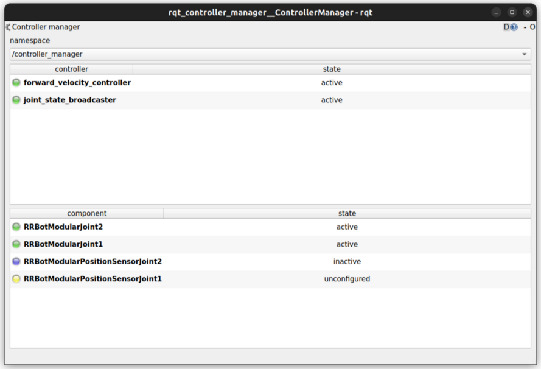

Controller Manager
Controller Manager is the main component in the ros2_control framework. It manages lifecycle of controllers, access to the hardware interfaces and offers services to the ROS-world.
Determinism
For best performance when controlling hardware you want the controller manager to have as little jitter as possible in the main control loop.
Independent of the kernel installed, the main thread of Controller Manager attempts to
configure SCHED_FIFO with a priority of 50. Read more about the scheduling policies
for example here.
For real-time tasks, a priority range of 0 to 99 is expected, with higher numbers indicating higher priority. By default, users do not have permission to set such high priorities. To give the user such permissions, add a group named realtime and add the user controlling your robot to this group:
$ sudo addgroup realtime
$ sudo usermod -a -G realtime $(whoami)
Afterwards, add the following limits to the realtime group in /etc/security/limits.conf:
@realtime soft rtprio 99
@realtime soft priority 99
@realtime soft memlock unlimited
@realtime hard rtprio 99
@realtime hard priority 99
@realtime hard memlock unlimited
The limits will be applied after you log out and in again.
You can run ros2_control with real-time requirements also from a docker container. Pass the following capability options to allow the container to set the thread priority and lock memory, e.g.,
$ docker run -it \
--cap-add=sys_nice \
--ulimit rtprio=99 \
--ulimit memlock=-1 \
--rm --net host <IMAGE>
For more information, see the Docker engine documentation about resource_constraints and linux capabilities.
The normal linux kernel is optimized for computational throughput and therefore is not well suited for hardware control. Alternatives to the standard kernel include
Real-time Ubuntu on Ubuntu (also for RaspberryPi)
linux-image-rt-amd64 or linux-image-rt-arm64 on Debian for 64-bit PCs
lowlatency kernel (
sudo apt install linux-lowlatency) on any Ubuntu
Though installing a realtime-kernel will definitely get the best results when it comes to low jitter, using a lowlatency kernel can improve things a lot with being really easy to install.
Publishers
- ~/activity [controller_manager_msgs::msg::ControllerManagerActivity]
A topic that is published every time there is a change of state of the controllers or hardware components managed by the controller manager. The message contains the list of the controllers and the hardware components that are managed by the controller manager along with their lifecycle states. The topic is published using the “transient local” quality of service, so subscribers should also be “transient local”.
Subscribers
- robot_description [std_msgs::msg::String]
String with the URDF xml, e.g., from
robot_state_publisher. Reloading of the URDF is not supported yet. All joints defined in the<ros2_control>-tag have to be present in the URDF.
Parameters
- <controller_name>.type
Name of a plugin exported using
pluginlibfor a controller. This is a class from which controller’s instance with name “controller_name” is created.- <controller_name>.params_file
The absolute path to the YAML file with parameters for the controller. The file should contain the parameters for the controller in the standard ROS 2 YAML format.
- <controller_name>.fallback_controllers
List of controllers that are activated as a fallback strategy, when the spawned controllers fail by returning
return_type::ERRORduring theupdatecycle. It is recommended to add all the controllers needed for the fallback strategy to the list, including the chainable controllers whose interfaces are used by the main fallback controllers.
Warning
The fallback controllers activation is subject to the availability of the state and command interfaces at the time of activation. It is recommended to test the fallback strategy in simulation before deploying it on the real robot.
An example parameter file:
Handling Multiple Controller Managers
When dealing with multiple controller managers, you have two options for managing different robot descriptions:
Using Namespaces: You can place both the
robot_state_publisherand thecontroller_managernodes into the same namespace.
control_node = Node(
package="controller_manager",
executable="ros2_control_node",
parameters=[robot_controllers],
output="both",
namespace="rrbot",
)
robot_state_pub_node = Node(
package="robot_state_publisher",
executable="robot_state_publisher",
output="both",
parameters=[robot_description],
namespace="rrbot",
)
Using Remappings: You can use remappings to handle different robot descriptions. This involves relaying topics using the
remappingstag, allowing you to specify custom topics for each controller manager.
control_node = Node(
package="controller_manager",
executable="ros2_control_node",
parameters=[robot_controllers],
output="both",
remappings=[('robot_description', '/rrbot/robot_description')]
)
robot_state_pub_node = Node(
package="robot_state_publisher",
executable="robot_state_publisher",
output="both",
parameters=[robot_description],
namespace="rrbot",
)
Helper scripts
There are two scripts to interact with controller manager from launch files:
spawner- loads, configures and start a controller on startup.
unspawner- stops and unloads a controller.
hardware_spawner- activates and configures a hardware component.
spawner
$ ros2 run controller_manager spawner -h
usage: spawner [-h] [-c CONTROLLER_MANAGER] [-p PARAM_FILE] [-n NAMESPACE] [--load-only] [--inactive] [-u] [--controller-manager-timeout CONTROLLER_MANAGER_TIMEOUT]
[--switch-timeout SWITCH_TIMEOUT] [--activate-as-group] [--service-call-timeout SERVICE_CALL_TIMEOUT] [--controller-ros-args CONTROLLER_ROS_ARGS]
controller_names [controller_names ...]
positional arguments:
controller_names List of controllers
options:
-h, --help show this help message and exit
-c CONTROLLER_MANAGER, --controller-manager CONTROLLER_MANAGER
Name of the controller manager ROS node
-p PARAM_FILE, --param-file PARAM_FILE
Controller param file to be loaded into controller node before configure. Pass multiple times to load different files for different controllers or to override the parameters of the same controller.
-n NAMESPACE, --namespace NAMESPACE
DEPRECATED Namespace for the controller_manager and the controller(s)
--load-only Only load the controller and leave unconfigured.
--inactive Load and configure the controller, however do not activate them
-u, --unload-on-kill Wait until this application is interrupted and unload controller
--controller-manager-timeout CONTROLLER_MANAGER_TIMEOUT
Time to wait for the controller manager service to be available
--service-call-timeout SERVICE_CALL_TIMEOUT
Time to wait for the service response from the controller manager
--switch-timeout SWITCH_TIMEOUT
Time to wait for a successful state switch of controllers. Useful if controllers cannot be switched immediately, e.g., paused
simulations at startup
--activate-as-group Activates all the parsed controllers list together instead of one by one. Useful for activating all chainable controllers altogether
--controller-ros-args CONTROLLER_ROS_ARGS
The --ros-args to be passed to the controller node for remapping topics etc
The parsed controller config file can follow the same conventions as the typical ROS 2 parameter file format. Now, the spawner can handle config files with wildcard entries and also the controller name in the absolute namespace. See the following examples on the config files:
/**: ros__parameters: type: joint_trajectory_controller/JointTrajectoryController command_interfaces: - position ..... position_trajectory_controller_joint1: ros__parameters: joints: - joint1 position_trajectory_controller_joint2: ros__parameters: joints: - joint2/**/position_trajectory_controller: ros__parameters: type: joint_trajectory_controller/JointTrajectoryController joints: - joint1 - joint2 command_interfaces: - position ...../position_trajectory_controller: ros__parameters: type: joint_trajectory_controller/JointTrajectoryController joints: - joint1 - joint2 command_interfaces: - position .....position_trajectory_controller: ros__parameters: type: joint_trajectory_controller/JointTrajectoryController joints: - joint1 - joint2 command_interfaces: - position ...../rrbot_1/position_trajectory_controller: ros__parameters: type: joint_trajectory_controller/JointTrajectoryController joints: - joint1 - joint2 command_interfaces: - position .....
unspawner
$ ros2 run controller_manager unspawner -h
usage: unspawner [-h] [-c CONTROLLER_MANAGER] [--switch-timeout SWITCH_TIMEOUT] controller_names [controller_names ...]
positional arguments:
controller_names Name of the controller
options:
-h, --help show this help message and exit
-c CONTROLLER_MANAGER, --controller-manager CONTROLLER_MANAGER
Name of the controller manager ROS node
--switch-timeout SWITCH_TIMEOUT
Time to wait for a successful state switch of controllers. Useful if controllers cannot be switched immediately, e.g., paused
simulations at startup
hardware_spawner
$ ros2 run controller_manager hardware_spawner -h
usage: hardware_spawner [-h] [-c CONTROLLER_MANAGER] [--controller-manager-timeout CONTROLLER_MANAGER_TIMEOUT]
(--activate | --configure)
hardware_component_names [hardware_component_names ...]
positional arguments:
hardware_component_names
The name of the hardware components which should be activated.
options:
-h, --help show this help message and exit
-c CONTROLLER_MANAGER, --controller-manager CONTROLLER_MANAGER
Name of the controller manager ROS node
--controller-manager-timeout CONTROLLER_MANAGER_TIMEOUT
Time to wait for the controller manager
--activate Activates the given components. Note: Components are by default configured before activated.
--configure Configures the given components.
rqt_controller_manager
A GUI tool to interact with the controller manager services to be able to switch the lifecycle states of the controllers as well as the hardware components.
It can be launched independently using the following command or as rqt plugin:
ros2 run rqt_controller_manager rqt_controller_manager
Double-click on a controller or hardware component to show the additional info.
Right-click on a controller or hardware component to show a context menu with options for lifecycle management.
Using the Controller Manager in a Process
The ControllerManager may also be instantiated in a process as a class, but proper care must be taken when doing so.
The reason for this is because the ControllerManager class inherits from rclcpp::Node.
If there is more than one Node in the process, global node name remap rules can forcibly change the ControllerManager's node name as well, leading to duplicate node names.
This occurs whether the Nodes are siblings or exist in a hierarchy.
The workaround for this is to specify another node name remap rule in the NodeOptions passed to the ControllerManager node (causing it to ignore the global rule), or ensure that any remap rules are targeted to specific nodes.

auto options = controller_manager::get_cm_node_options();
options.arguments({
"--ros-args",
"--remap", "_target_node_name:__node:=dst_node_name",
"--log-level", "info"});
auto cm = std::make_shared<controller_manager::ControllerManager>(
executor, "_target_node_name", "some_optional_namespace", options);
Launching controller_manager with ros2_control_node
The controller_manager can be launched with the ros2_control_node executable. The following example shows how to launch the controller_manager with the ros2_control_node executable:
control_node = Node(
package="controller_manager",
executable="ros2_control_node",
parameters=[robot_controllers],
output="both",
)
The ros2_control_node executable uses the following parameters from the controller_manager node:
- lock_memory (optional; bool; default: false for a non-realtime kernel, true for a realtime kernel)
Locks the memory of the
controller_managernode at startup to physical RAM in order to avoid page faults and to prevent the node from being swapped out to disk. Find more information about the setup for memory locking in the following link : How to set ulimit values The following command can be used to set the memory locking limit temporarily :ulimit -l unlimited.- cpu_affinity (optional; int (or) int_array;)
Sets the CPU affinity of the
controller_managernode to the specified CPU core. If it is an integer, the node’s affinity will be set to the specified CPU core. If it is an array of integers, the node’s affinity will be set to the specified set of CPU cores.- thread_priority (optional; int; default: 50)
Sets the thread priority of the
controller_managernode to the specified value. The value must be between 0 and 99.- use_sim_time (optional; bool; default: false)
Enables the use of simulation time in the
controller_managernode.
Concepts
Restarting all controllers
The simplest way to restart all controllers is by using switch_controllers services or CLI and adding all controllers to start and stop lists.
Note that not all controllers have to be restarted, e.g., broadcasters.
Restarting hardware
If hardware gets restarted then you should go through its lifecycle again in order to reconfigure and export the interfaces
Hardware and Controller Errors
If the hardware during it’s read or write method returns return_type::ERROR, the controller manager will stop all controllers that are using the hardware’s command and state interfaces.
Likewise, if a controller returns return_type::ERROR from its update method, the controller manager will deactivate the respective controller. In future, the controller manager will try to start any fallback controllers if available.
Support for Asynchronous Updates
For some applications, it is desirable to run a controller at a lower frequency than the controller manager’s update rate. For instance, if the update_rate for the controller manager is 100Hz, the sum of the execution times of all controllers’ update calls and hardware components read and write calls must be below 10ms. If one controller requires 15ms of execution time, it cannot be executed synchronously without affecting the overall system update rate. Running a controller asynchronously can be beneficial in this scenario.
The async update support is transparent to each controller implementation. A controller can be enabled for asynchronous updates by setting the is_async parameter to true. The controller manager will load the controller accordingly. For example:
controller_manager:
ros__parameters:
update_rate: 100 # Hz
...
example_async_controller:
ros__parameters:
type: example_controller/ExampleAsyncController
is_async: true
update_rate: 20 # Hz
...
will result in the controller being loaded and configured to run at 20Hz, while the controller manager runs at 100Hz. The description of the parameters can be found in the Common Controller Parameters section of the ros2_controllers documentation.
Scheduling Behavior
From a design perspective, the controller manager functions as a scheduler that triggers updates for asynchronous controllers during the control loop.
In this case, the ControllerInterfaceBase calls AsyncFunctionHandler to handle the actual update callback of the controller, which is the same mechanism used by the resource manager to support read/write operations for asynchronous hardware. When a controller is configured to run asynchronously, the controller interface creates an async handler during the controller’s configuration and binds it to the controller’s update method. The async handler thread created by the controller interface has either the same thread priority as the controller manager or the priority specified by the thread_priority parameter. When triggered by the controller manager, the async handler evaluates if the previous trigger is successfully finished and then calls the update method.
If the update takes significant time and another update is triggered while the previous update is still running, the result of the previous update will be used. When this situation occurs, the controller manager will print a missing update cycle message, informing the user that they need to lower their controller’s frequency as the computation is taking longer than initially estimated, as shown in the following example:
[ros2_control_node-1] [WARN] [1741626670.311533972] [example_async_controller]: The controller missed xx update cycles out of yy total triggers.
If the async controller’s update method throws an unhandled exception, the controller manager will handle it the same way as the synchronous controllers, deactivating the controller. It will also print an error message, similar to the following:
[ros2_control_node-1] [ERROR] [1741629098.352771957] [AsyncFunctionHandler]: AsyncFunctionHandler: Exception caught in the async callback thread!
...
[ros2_control_node-1] [ERROR] [1741629098.352874151] [controller_manager]: Caught exception of type : St13runtime_error while updating controller
[ros2_control_node-1] [ERROR] [1741629098.352940701] [controller_manager]: Deactivating controllers : [example_async_controller] as their update resulted in an error!
Monitoring and Tuning
ros2_control controller_interface has a ControllerUpdateStats structure which can be used to monitor the controller update rate and the missed update cycles. The data is published to the /diagnostics topic. This can be used to fine tune the controller update rate.
Different Clocks used by Controller Manager
The controller manager internally uses the following two different clocks for a non-simulation setup:
RCL_ROS_TIME: This clock is used mostly in the non-realtime loops.RCL_STEADY_TIME: This clock is used mostly in the realtime loops for theread,update, andwriteloops. However, when the controller manager is used in a simulation environment, theRCL_ROS_TIMEclock is used for triggering theread,update, andwriteloops.
The time argument in the read and write methods of the hardware components is of type RCL_STEADY_TIME, as most of the hardware expects the time to be monotonic and not affected by the system time changes. However, the time argument in the update method of the controller is of type RCL_ROS_TIME as the controller is the one that interacts with other nodes or topics to receive the commands or publish the state. This time argument can be used by the controllers to validate the received commands or to publish the state at the correct timestamp.
The period argument in the read, update and write methods is calculated using the trigger clock of type RCL_STEADY_TIME so it is always monotonic.
The reason behind using different clocks is to avoid the issues related to the affect of system time changes in the realtime loops. The ros2_control_node now also detects the overruns caused by the system time changes and longer execution times of the controllers and hardware components. The controller manager will print a warning message if the controller or hardware component misses the update cycle due to the system time changes or longer execution times.